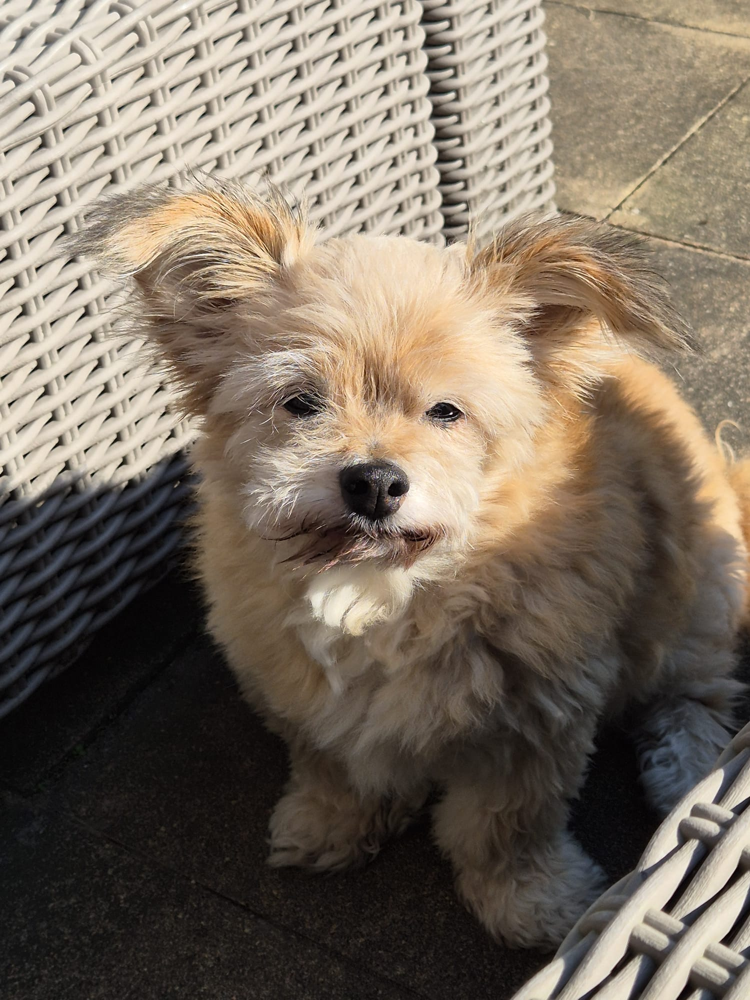
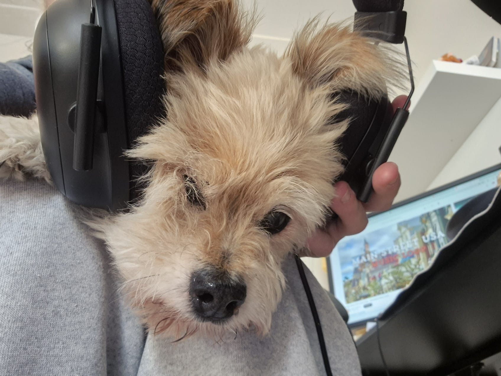
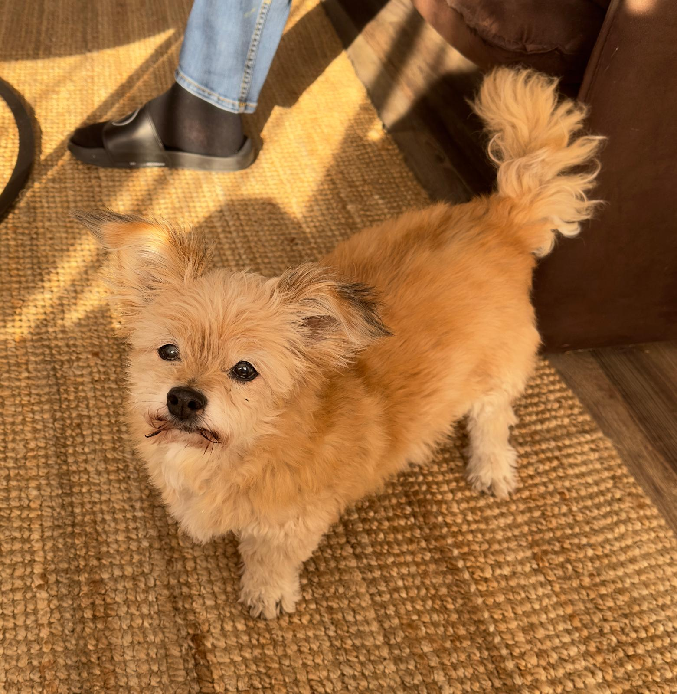
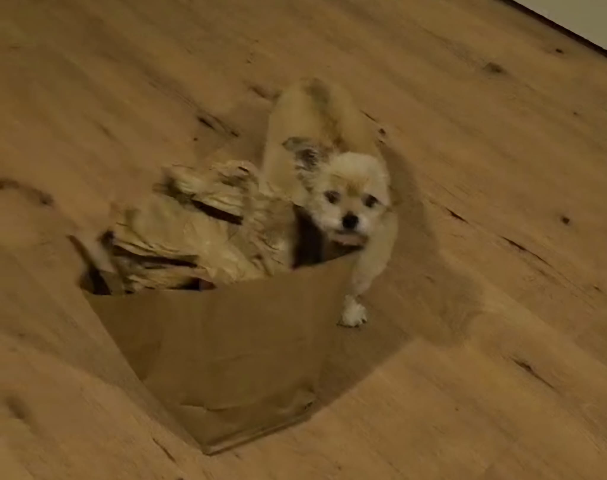
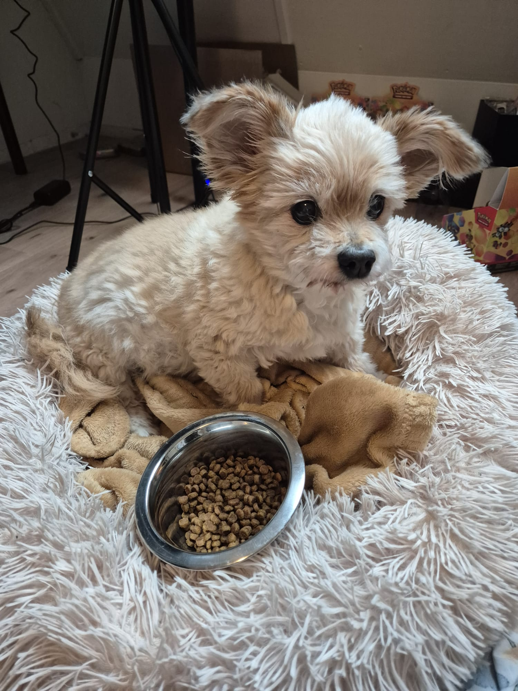
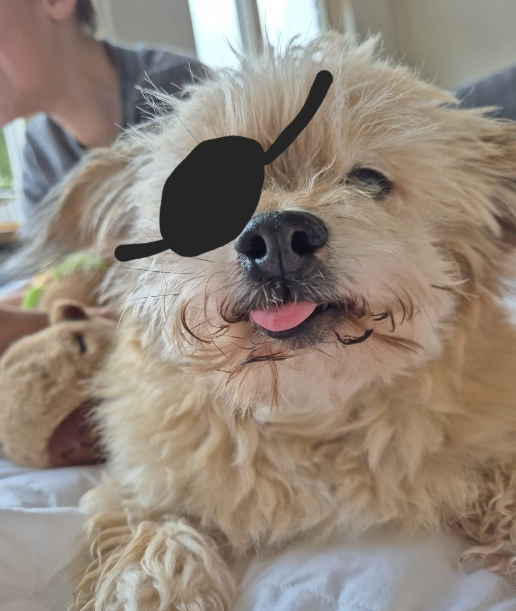
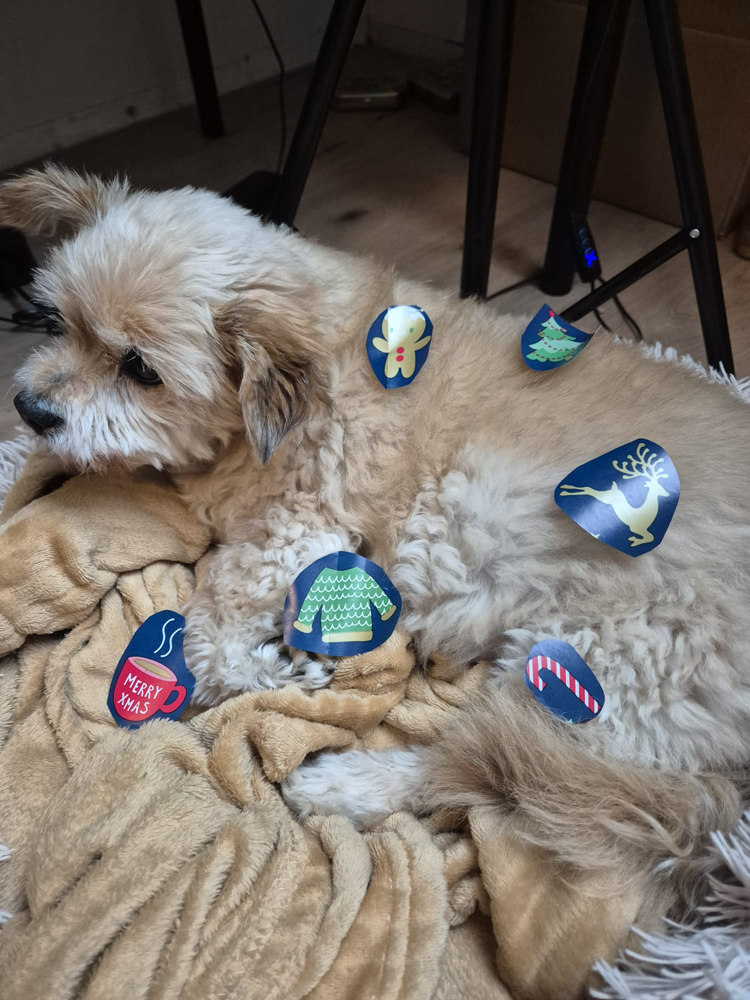
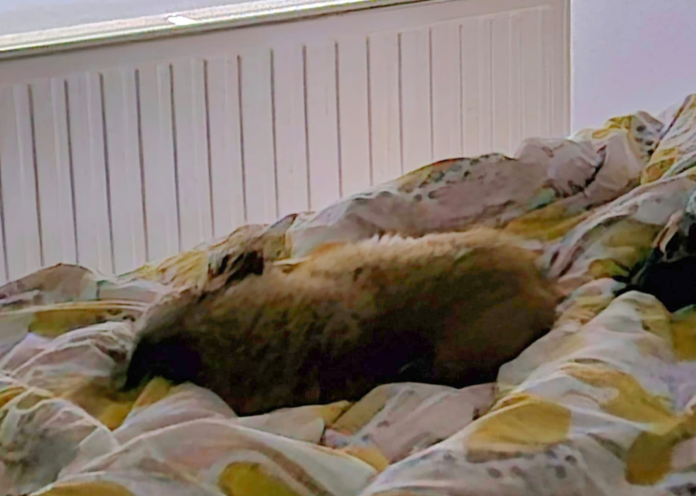

Over Boomie
Boomie de Hond, vaak liefkozend Hert genoemd, is een vrolijke en energieke hond
die altijd in is voor wat lekkers.
Zijn grootste passie is eten, en hij kan geen enkele
snack weerstaan. Een van zijn meest opvallende kenmerken is
zijn altijd hangende
tong, wat hem een schattig en herkenbaar uiterlijk geeft. Zijn speelse
persoonlijkheid en
unieke uiterlijk maken hem tot een echte hartendief!


Hert is een speelse en ondeugende hond die altijd op zoek is naar aandacht.
Hert schooit
Hert is een speelse en ondeugende hond die altijd op zoek is naar aandacht.
Hij heeft de slechte gewoonte om veel te schooien, vooral wanneer er eten in de buurt is.
Of het nu gaat om een snack of een maaltijd, Hert is altijd snel aanwezig en doet
zijn uiterste best om iets extra's te bemachtigen. Zijn charmante blik en geduldige gedrag
maken het moeilijk voor zijn baasje om hem te weerstaan, wat hem tot een echte schooiert maakt!

Hert, de vrolijke hond, heeft altijd energie voor tien. Op een avond besluit hij woest te graven,
Hert valt
Hert, de vrolijke hond, heeft altijd energie voor tien. Op een avond besluit hij woest te graven,
maar zijn enthousiasme leidt tot een kleine misstap. Terwijl hij druk bezig is met graven, verliest hij
zijn evenwicht en hangt hij met 2 poten aan het bed. Gelukkig is Hert een vechter en staat
meteen weer op, schudt zich even uit en kijkt met een blik die zegt: "Geen probleem, ik ben er klaar voor!".
Zijn baasje kan niet anders dan lachen om de ondeugende hond die altijd vol verrassingen zit.

Hert, de nieuwsgierige hond, was weer eens op avontuur toen hij zijn neus in een papieren tas stak.
Hert zit vast
Hert, de nieuwsgierige hond, was weer eens op avontuur toen hij zijn neus in een papieren tas stak.
Hij was zo enthousiast dat hij niet doorhad dat het handvat vast kwam te zitten aan zijn kop en poot.
Nu zit hij vast, met zijn kop door het handvat heen en zijn poot erin verstrikt. Hert kijkt verbaasd om zich heen,
niet helemaal zeker hoe dit is gebeurd, maar hij blijft kalm. Zijn baasje, die het grappige tafereel ziet,
kan niet anders dan lachen terwijl hij voorzichtig probeert Hert uit zijn ongemakkelijke positie te bevrijden.

Hert is een echte kieskeurige eter. Zijn dagelijkse brokken staan voor hem klaar, maar hij heeft helemaal
Hert is kieskeurig
Hert is een echte kieskeurige eter. Zijn dagelijkse brokken staan voor hem klaar, maar hij heeft helemaal
geen zin in het saaie, droge eten. Hert eet alleen als er een speciaal ingrediënt doorheen zit: worst!
Zodra hij de geur van de worst ruikt, verschijnt er een grote glimlach op zijn gezicht en begint hij
enthousiast te eten. Zonder de worst is het een ander verhaal, dan kijkt hij zijn baasje aan met een blik van,
"Is dit alles?" Hert heeft zijn eigen regels als het om maaltijden gaat, en zijn baasje weet inmiddels dat
een beetje worst de manier is om Hert gelukkig te maken!

Hert de Piraat is een avontuurlijke hond die altijd op zoek is naar schatten. Met een ooglapje en
Hert de Piraat
Hert de Piraat is een avontuurlijke hond die altijd op zoek is naar schatten. Met een ooglapje en
zijn staart rechtop, vaart hij over zee op zoek naar lekkernijen, vooral worst! Zijn avonturen zijn altijd
vol plezier, en niemand ontsnapt aan zijn ondeugende streken. Hert de Piraat maakt
elke dag een nieuw avontuur!

Hert is een speelse en ondeugende hond die altijd op zoek is naar avontuur, en deze kerst heeft hij
Hert helpt de Kerstman
Hert is een speelse en ondeugende hond die altijd op zoek is naar avontuur, en deze kerst heeft hij
besloten de kerstman te helpen. Wanneer de kerstman druk in de weer is met het inpakken van cadeautjes, is
Hert er altijd snel bij om te helpen. Met zijn ondeugende blik en blije energie zorgt hij ervoor dat alles op
rolletjes loopt. Hert's charmante gedrag en zijn enthousiasme maken hem tot een onmisbare helper
van de kerstman, zelfs als hij af en toe afgeleid wordt door een lekkere snack.

Hert, de vrolijke hond, heeft altijd tijd voor een goede nachtrust. Op een rustige ochtend besluit hij